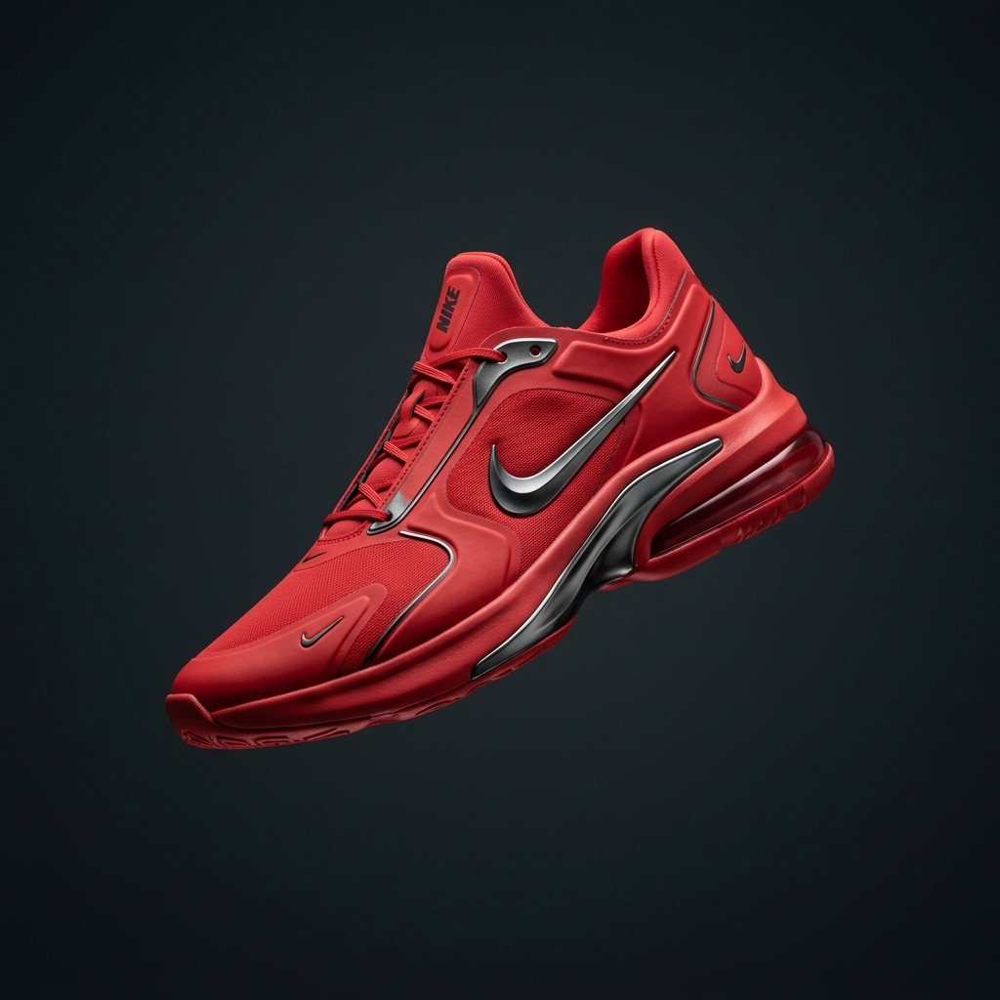
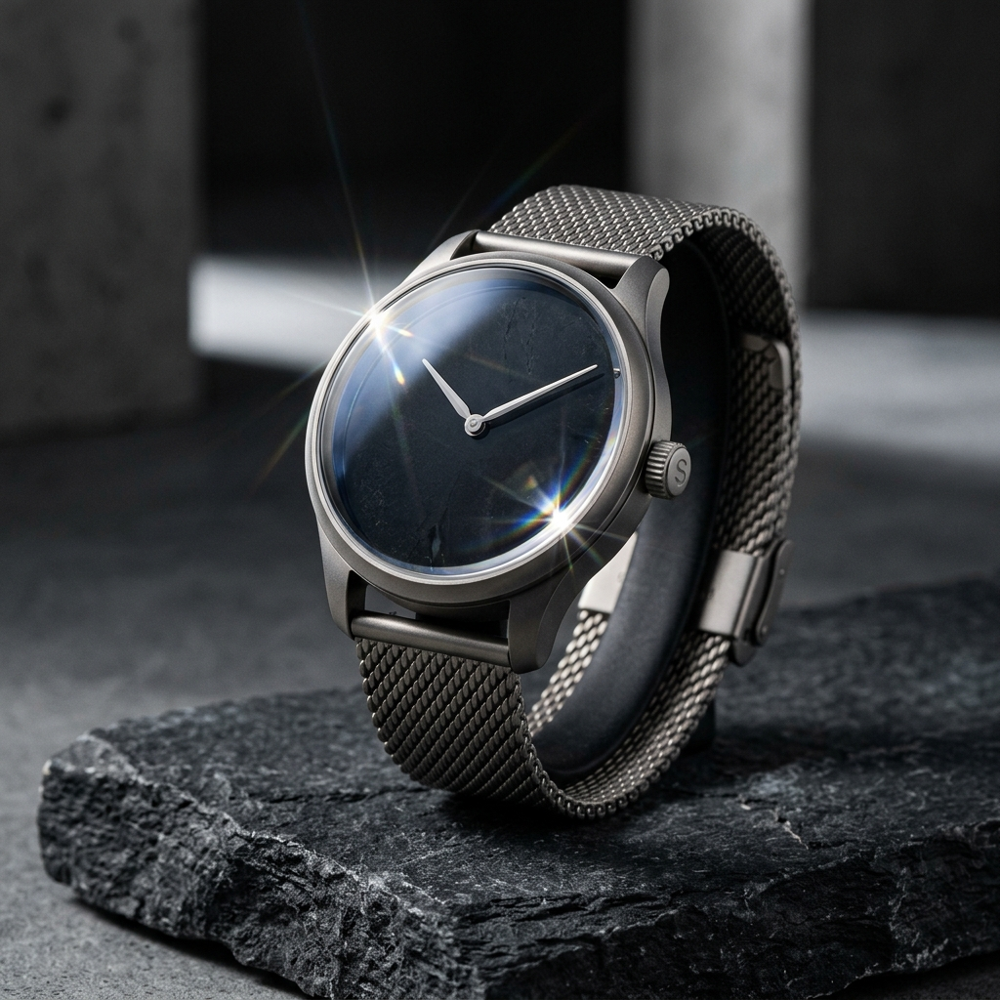
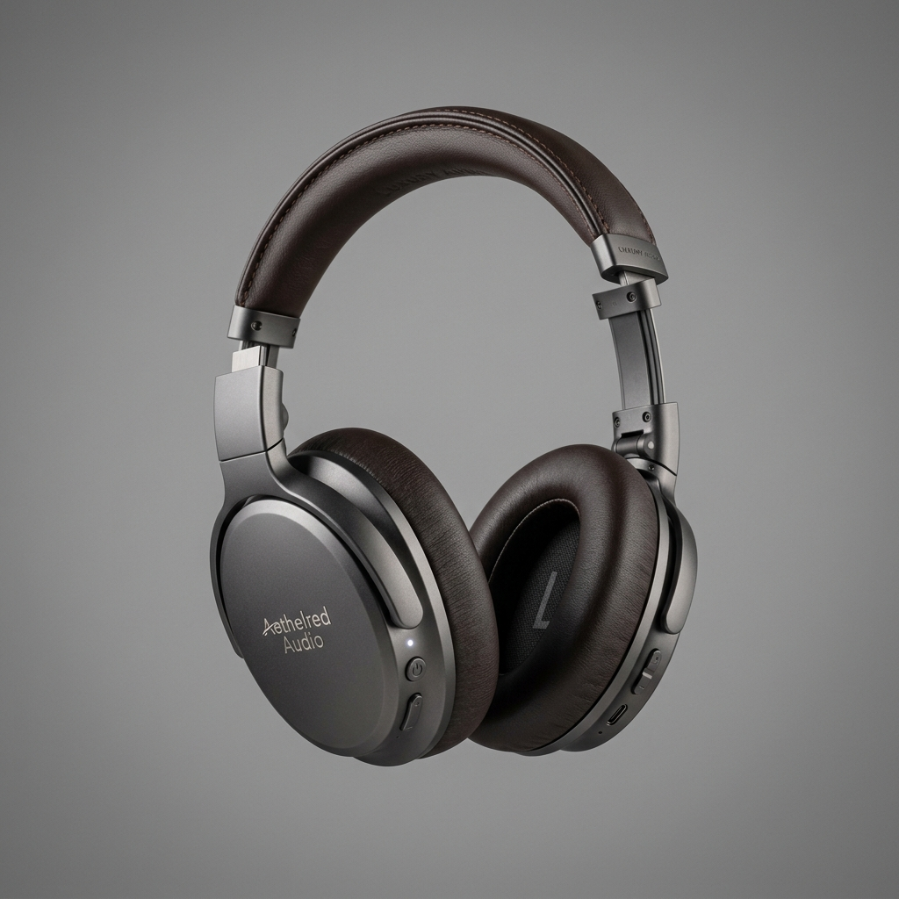
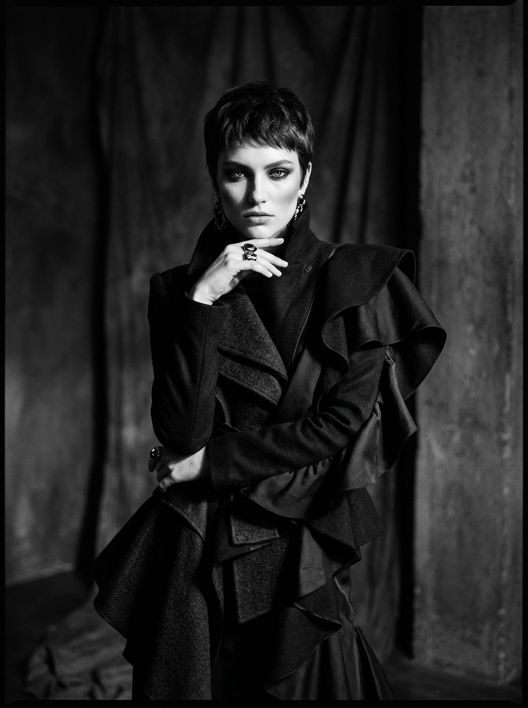

Purity in motion.
A minimalist animation framework designed for high-craft digital products, visual systems, and editorial design.
Selected Works




A minimalist animation framework designed for high-craft digital products, visual systems, and editorial design.



